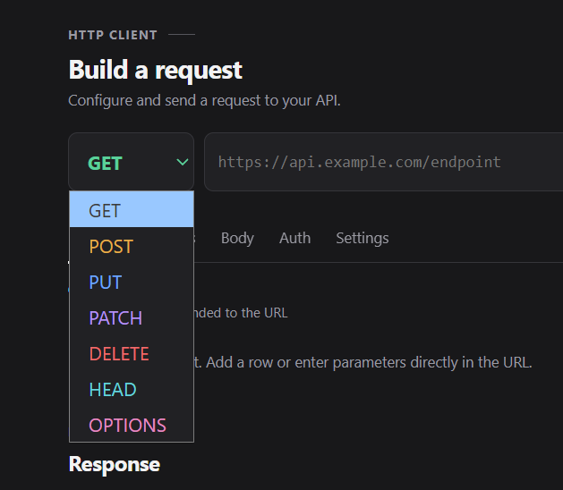

GETRead data
Retrieve a resource or list of resources. GET requests usually do not need a body.
 apidesk
apideskThe method tells an API what action you want to perform on a resource.
Choose a method from the dropdown beside the URL field. The API documentation tells you which method each endpoint expects.
GETRetrieve a resource or list of resources. GET requests usually do not need a body.
POSTSend data to the server, often to create a resource or start an action.
PUTSend a complete representation to replace an existing resource.
PATCHSend only the fields you want to change.
DELETEAsk the server to delete the selected resource.
HEADLike GET, but returns response headers without a body.
OPTIONSAsk which communication options are available for a resource.
Some APIs support additional methods such as TRACE. Use the method documented by the API you are calling.
